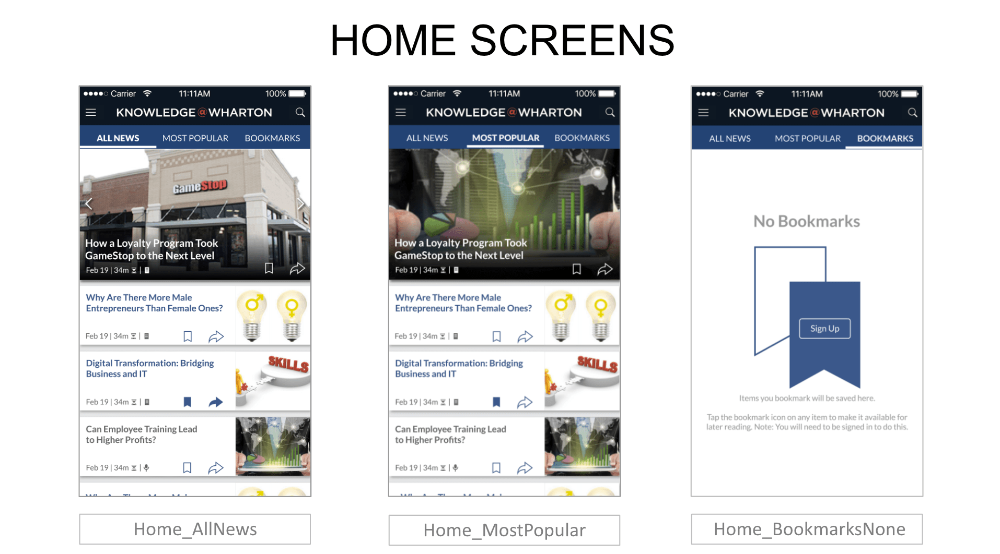
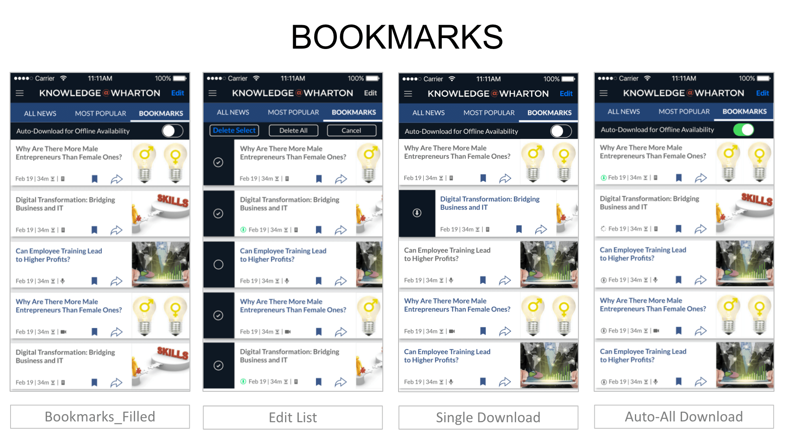
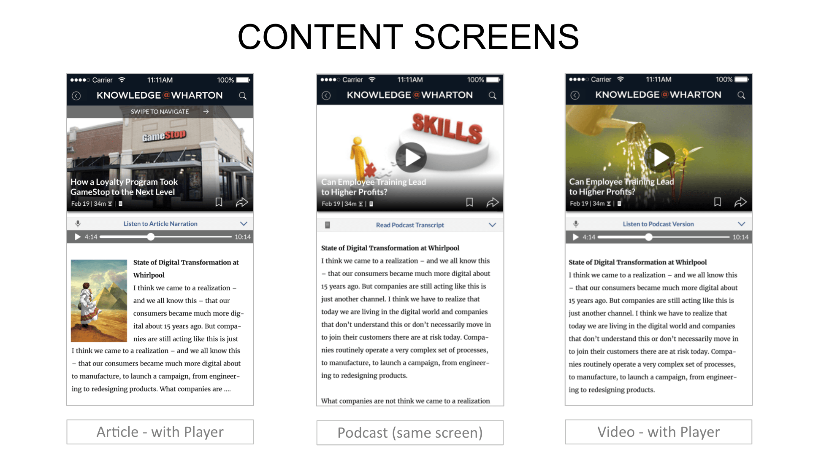
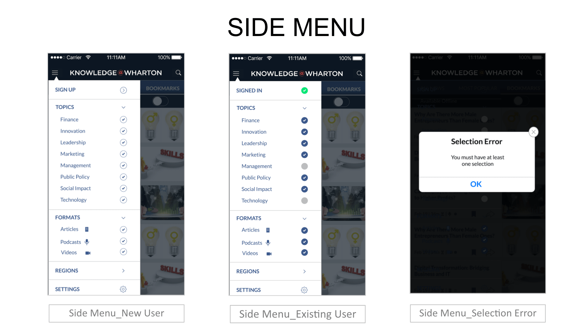
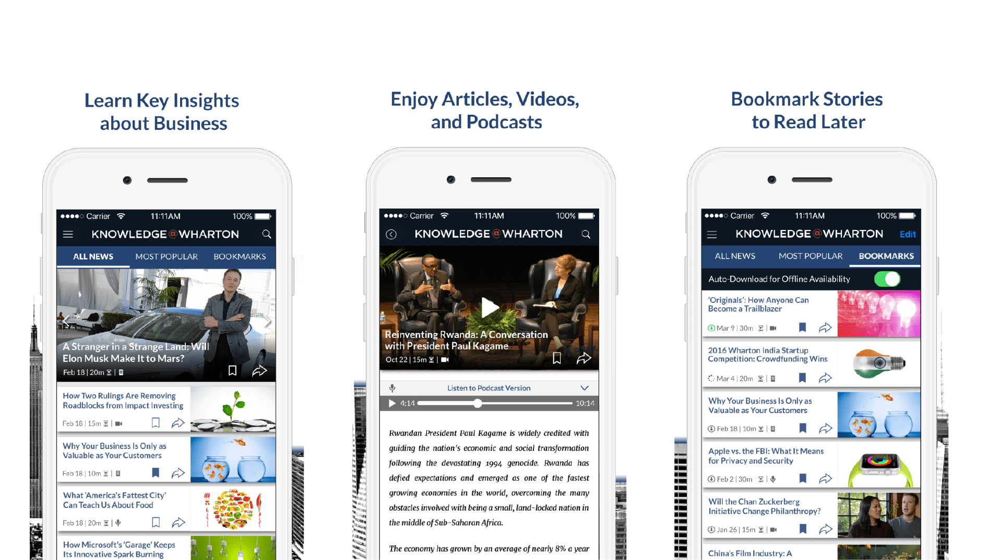
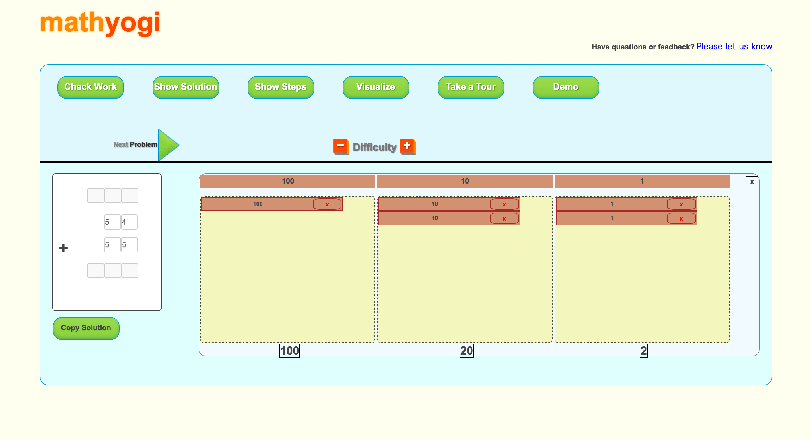
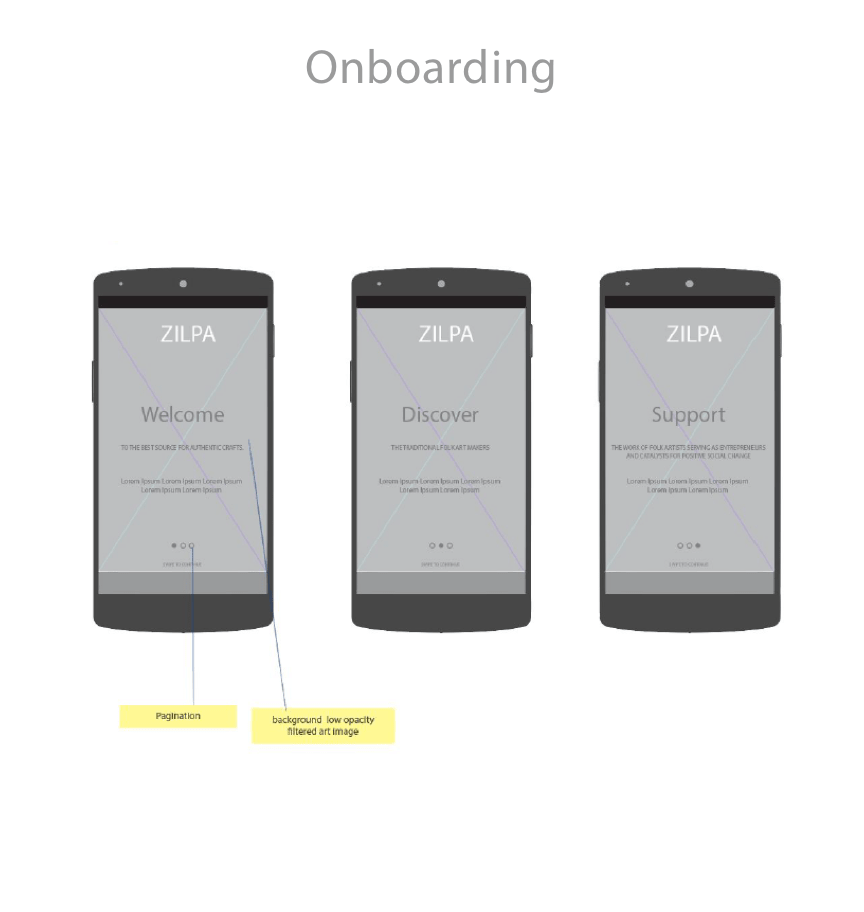
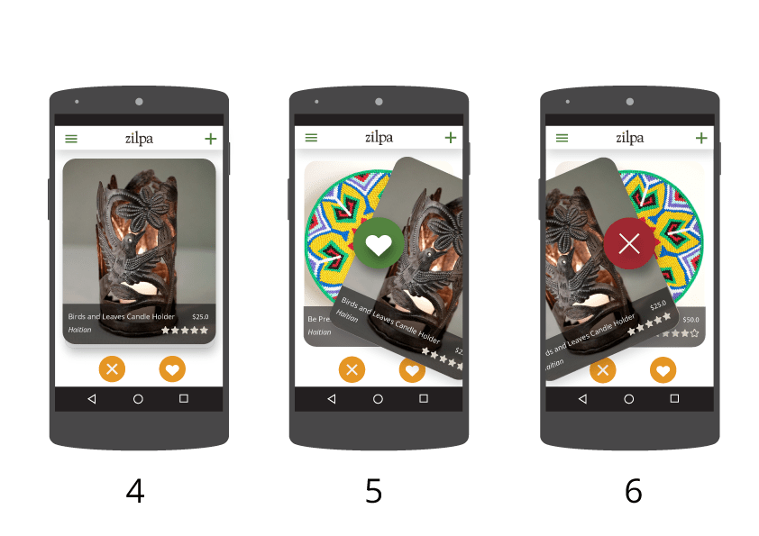

About
Hello I'm Rahul, currently working full-time as a UX Engineer at Riviera Partners in San Fransisco. I have been designing and building web / smartphone apps for the past 4 years.
Always looking for new opportunities in UI/UX field in the Bay Area.
Work
Riviera Partners Web Apps
UI Design & Development, Responsive Design, Mobile Web, Styleguide, React
Delve is Riviera Partner's phone application which matches the best jobs from the hottest tech companies. I contributed to this project by designing the UI, coding responsive layout for multiple devices (iPhone, Android) and made it compatible for multiple browsers Chrome, Safari and Firefox. Also,
fixed UI bugs across the app.
Converted designed UI Mockup to live landing page for delve. Implemented the logic to check for mobile device and browser to hide and show the content using React and bowser library.
Sutro is an inhouse web app for Riviera Partners which allows recruiters to keep track of candidates, jobs, clients, companies and best find matches for candidates.
One of the tasks I performed was showing the company score of a company based on the average rating of its employees. This helped Recruiters to quickly scan the company
and make a decision about the candidates background employments, matches, while sourcing the candidate. I designed the UI and coded the UI reusing existing UI component
keeping Sutro's aesthetics consistent across different pages.

In order to keep the aesthetics and themes consistent across all the apps Riviera needed a styleguide which could help developers, PMs and new hires to quickly refer to the Styleguide
and learn about the color palette, icons, typography and other UI Components that are being used. I researched and developed a UI Styleguide of patterns and components.
Snap is the third inhouse web app of Riviera Partners which allows hiring managers and clients to keep track of candidates, jobs, applications, submitted by the Riviera recruiters.
Providing a summary of the candidate search for a role was a challenging piece of this part. The Client companies needed to quickly understand the status of the search and make decisions.
Hence, I designed and presented multiple mocks iterations of the solution, which shows the data with gauges with important information of i.e. search age, outbound to interest, submitted to interview, candidate reject after interview.

Riviera Partners
Show Details
Wharton School of Business
Competitive Analysis, UI Design, and iTunes Submission Assets
Knowledge@Wharton is the digital business journal committed to sharing the intellectual capital of The Wharton School of Business of the University of Pennsylvania.
I did a competitive analysis of existing business journal apps which included BBC News, CNN News, and McKinsey Insights. Major focus was analyzing the UX and functionality of these apps and the categories were;
Grid/Layout, Filter by/Sorting feature, Search feature, Readability, Sharing via social media and email, Download for offline reading and Social login.
Here is a summary chart of my analysis.
Here is a summary chart of my analysis.
To come up with better overview of goals and requirements of the app, I quickly jot down my thoughts and how to interconect with each other. Gathered some inspiration from existing journal apps layout, and draw rough sketch of layout of the app.
After successfully presenting and getting approval of wireframes from the stakeholders and engineering team I designed the full color screens using Adobe Illustrator, keeping the aesthetics of the Knowledge@Wharton brand.





I designed and converted app icons for different dimensions so it can look great on all iPhones and iPads.
Then mocked up the icons in different screens of iOS including Home screen, App store screen, Settings screen.
Also, prepared the images that go on the Appstore for app details on the app download page.

The Wharton School of Business
Show Details
MathYogi: Virtual Math Mentor
UI Design, Frontend development, Materialize CSS, Competitive analysis, Layout re-design, Mockups, Screenshots
MathYogi was a startup that I worked on with my friends. MathYogi, a virtual assistant for math teachers and a personal math mentor.
MathYogi allows students to practice infinite math problems and creates in depth analysis reports of students weakness to assist teachers.
On top of that MathYogi creates a social network of mentors, peers and parents to make math learning easy.
I did a competitive analysis of existing Math Teaching Apps which included Khan Academy, Mathspace, Dreambox, Woothmath. Major focus was to analyze the features and functionality.
For the version 1.0 of MathYogi the major focus of the app was functionality and once the backend and logic were in place, this is what I was handed to work on.

For version 2.0, I pin pointed the problem with existing User Interface. Users used to get lost and confused while using the app. The target audience of this app were kids of elementary school and teachers and when I compared the aesthetics of MathYogi to other existing apps which were doing well. I noticed the branding colors, layout, typography, and workflow all were not working well. The app UI elements seemed busy and they was adding lot of cognitive load on users. I approached this problem by keeping my users in mind and designing a warm and friendly, simple experience for them. I designed the layout, picked the brand colors, typography and removed unncessary elements which minimized the cognitive load so the user can focus more on solving math problems.
I used HTML, MaterializeCSS library to code the User interface and also added the 'Walk me through' tab on left, so users can learn the features of the app if needed.
I wrote media-queries to make sure the app was responsive for multiple devices including big desktops and iPads.
Screenshots of the splash page of MathYogi app.
MathYogi: Virtual Math Mentor
Show Details
Zilpa: Authentic Crafts
UI Design, Android development, Inspiration UI, Layout design, Mockups, Screenshots
I worked on Zilpa as my masters project focusing on Android app development and UI Design. Zilpa is a source for authentic crafts. Zilpa provides a way for travelers and artists to have moments and experiences together in a real,
authentic way. Zilpa takes a user's location and guides them to artists who practice traditional methods to create art.
Then, the user can purchase a piece of art from the artisan, and meet them in person and learn stories about their creation process.
I created the user flow for the entire app from welcome screen to getting major tasks done, i.e. Artist making profit and Customers finding art they love.
Based on the workflows I created low fidelity wireframes for different screens.

I wanted to show the earthy, natural, handmade, ethnic, yet sophisticated brand. And here are some of the logo iterations I did using Illustrator.
I selected this logo as the final because it feels handcrafted, and the colors are earthy yet modern brand. And the dot of the 'i' has the colors which represents diversity and culture, which was resonating with the brand. Fonts used: Goudy, Open Sans
I converted the lo-fidelity wireframes into full colored user interface design using Illustrator.

Zilpa: Authentic Crafts
Show Details
Play
When I am not coding or designing, I am producing deep house music using Ableton, this is one of my hobbies which allows me to express myself and keep growing. Here is my shameless self promo 🔌 🎹 🎵
I am currently looking for full time opportunities in UI/UX field in the Bay Area.
Feel free to call at 415-471-7633 or drop me a message at rahulpatle101@gmail.com
Copyright 2017 by Rahul Patle